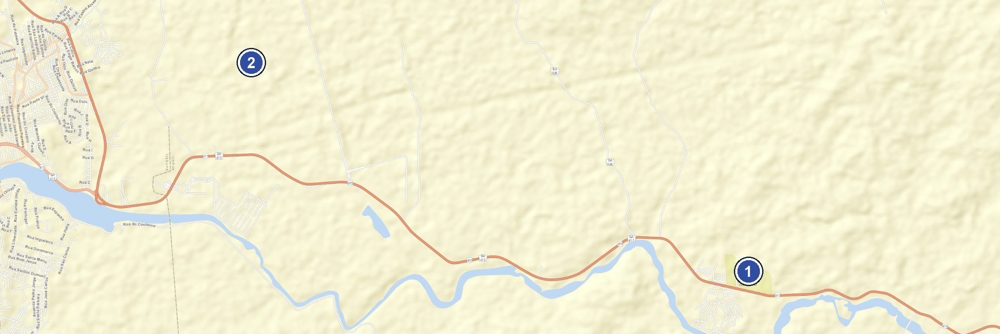

Map: Esri, OpenStreetMap- 1Universidade Estadual de Santa Cruz (UESC)Soane Nazaré de Andrade Campus — Rodovia Jorge Amado, km 16, Salobrinho, Ilhéus – BA, 45662-900, BrazilGet directions
- 2Universidade Federal do Sul da Bahia (UFSB)Jorge Amado Campus — Rodovia Ilhéus–Vitória da Conquista (BR-415), km 39, Ferradas, on the Itabuna–Ilhéus border – BA, 45613-204, BrazilGet directions